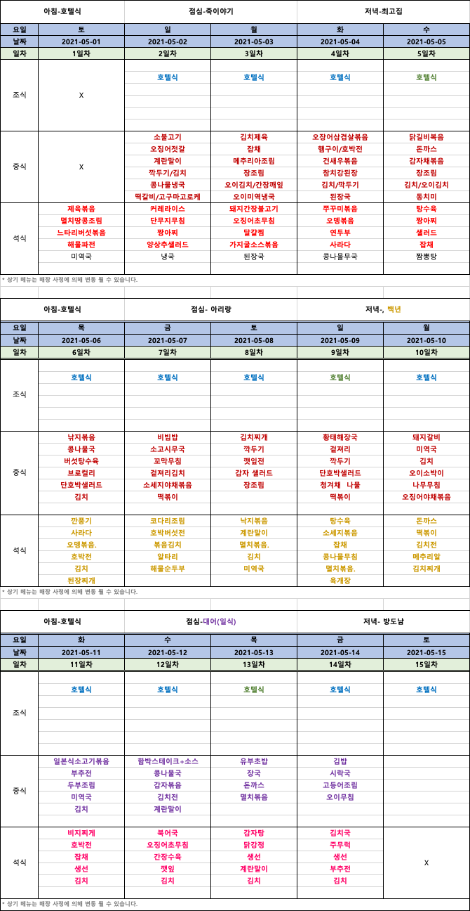

호텔식 주문 방법
식사 관련 문제는 반드시 격리채널을 통해서 문의 바랍니다.
호텔조식은 방안에 놓인 메뉴를 보고 선택해서 전날 07:30 전까지 문앞 의자에 두면 직원이 수거해 갑니다.
주문한 호텔조식이 다른 메뉴가 배달되거나 8시 이후에도 조식배달이 안될시 로비에 요청해 주세요.
사전 예약이 불가한 2일 조식은 임의로 제공됩니다.
선택 메뉴가 없을시에는 호텔에서 임의적으로 메뉴를 지정해서 제공합니다.
메뉴 선택시 영어로만 작성하셔야 합니다.
중식과 석식은 한식도시락 진행됩니다. 따로 기재하실 필요 없습니다.
아침 메뉴는 요일마다 다른 메뉴를 확인해 주세요.
아시안 메뉴 / 웨스턴 메뉴 / 채식 메뉴 - 택 1
메뉴의 고유번호와 음료등을 체크박스에 체크하여 주세요.
개인별 주문지를 작성해 주세요. 한 객실에 2인이라면 2장이 작성되어야 합니다.
호텔식 주문 양식 샘플
객실에 준비된 주문서를 참고하여 이름과 방번호, 날짜를 기입하시고 제출해주세요.
식사제공 시간
아침식사 07시~09시
점심식사 12시~ 13시
저녁 18시~19시
전체식단
